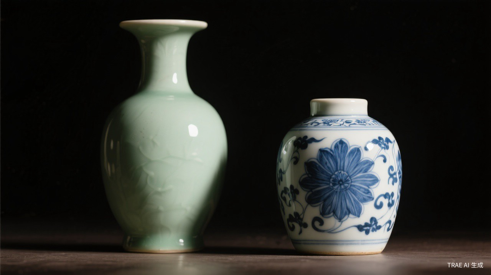

青铜礼器
青铜礼器是中国古代青铜器的核心类别，主要包括鼎、簋、爵、觚、尊等器型。 鼎是权力的象征，天子用九鼎，诸侯用七鼎；簋是盛放谷物的礼器，常与鼎配合使用。 商代青铜器以厚重的造型和神秘的饕餮纹著称，西周时期则更注重铭文记载， 记录了当时的政治、军事与祭祀活动。

玉石礼器
"以玉作六器，以礼天地四方"——玉璧礼天，玉琮礼地，玉圭礼东方， 玉璋礼南方，玉璜礼北方，玉琥礼西方。良渚文化的玉琮以其精美的神人兽面纹闻名， 红山文化的玉龙则是中华龙文化的重要源头。玉石礼器体现了古人对天地神灵的敬畏， 也是身份地位的重要象征。

金银器皿
唐代是中国金银器工艺的黄金时代。1970年西安何家村出土的窖藏金银器， 包括鎏金舞马衔杯纹银壶、鸳鸯莲瓣纹金碗等，展现了极高的工艺水平。 唐代金银器融合了中原传统与西域风格，采用了锤揲、錾刻、鎏金、镶嵌等多种技法， 是丝绸之路文化交流的珍贵见证。

陶瓷精品
中国瓷器以其精湛工艺和独特美学享誉世界。唐三彩以黄、绿、白三色为主， 造型生动；宋代五大名窑（汝、官、哥、钧、定）各具特色， 汝窑天青釉更是被誉为"雨过天青云破处"。元代青花瓷开启了彩瓷新时代， 明清时期的斗彩、粉彩、珐琅彩将瓷器艺术推向巅峰。